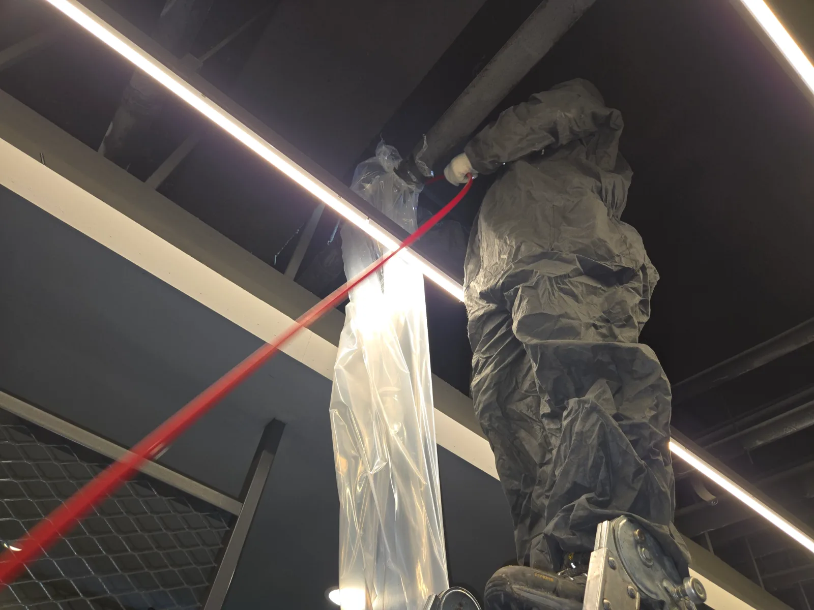

구로구 구로동 하수구막힘, 현장 도착 후 진단
구로구 구로동 오피스텔에서 공용하수관막힘이 발생했다는 연락을 받고 전문 장비를 준비해 신속하게 출동했습니다. 오피스텔 공용배관막힘은 여러 공간의 배수에 영향을 줄 수 있어 막힘 위치를 빠르게 찾아 작업해야 합니다.
현장 배관 경로를 확인한 결과 오피스텔 공용 하수관이 아래층 PC방 천장을 지나고 있었습니다. 상부에서 장비를 반복적으로 투입하기보다 PC방 천장에 노출된 배관을 통해 막힌 구간과 가까운 위치에서 직접 작업하는 방법을 선택했습니다.
신라건축설비는 단순 하수구막힘뿐만 아니라 오피스텔·상가·대형건물의 공용배관 구조를 확인해 실제 막힘이 발생한 위치까지 추적합니다. 이번 구로동 공용하수관막힘도 PC방 영업 공간과 천장 구조를 확인한 뒤 안전하게 작업을 준비했습니다.
1단계: 증상 확인과 필요한 장비 작업
PC방 내부에 사다리를 설치하고 천장에 노출된 오피스텔 공용 하수관의 위치를 확인했습니다. 작업 중 오수와 이물질이 PC방 내부로 떨어지지 않도록 배관 주변에 비닐 보양을 꼼꼼하게 진행했습니다.
노출배관의 작업구를 확보한 뒤 리지드 플렉스샤프트를 공용 하수관 내부로 투입했습니다. 고소작업이 필요한 현장이었기 때문에 작업자의 안전과 내부 시설물 보호를 함께 고려하며 샤프트 작업을 진행했습니다.

2단계: 원인 구간 처리와 정상 작동 확인
리지드 샤프트를 회전시키며 구로동 오피스텔 공용배관막힘 구간을 반복적으로 공략했습니다. 배관 안쪽에 엉켜 있던 머리카락과 섬유질, 생활 이물질을 샤프트에 걸어 밖으로 끌어냈습니다.
사진처럼 여러 종류의 이물질이 단단하게 뒤엉킨 큰 덩어리가 제거됐습니다. 공용 하수관 내부에 남아 있는 이물질까지 추가로 정리한 뒤 충분한 양의 물을 흘려보내 배수와 통수 상태를 확인했습니다.

작업 결과와 재발 방지 안내
구로구 구로동 오피스텔 공용하수관막힘을 PC방 천장 노출배관을 통한 리지드 샤프트 작업으로 해결했습니다. 하수구 입구만 작업하지 않고 막힌 구간과 가까운 공용배관에 직접 접근해 대량의 이물질을 제거하고 배수 기능을 정상화했습니다.
오피스텔 공용 하수관은 여러 세대에서 사용하는 배수가 한곳으로 모이기 때문에 머리카락과 물티슈, 섬유질 등 생활 이물질이 반복적으로 유입되면 큰 공용배관막힘으로 이어질 수 있습니다. 여러 공간에서 동시에 배수가 느려지거나 하수구역류가 나타난다면 공용 하수관을 빠르게 점검해야 합니다.
신라건축설비는 가정의 하수구막힘부터 오피스텔·상가·PC방·대형건물의 공용배관막힘, 천장 노출배관 작업과 대형 배관공사까지 대응합니다. 서울·경기·인천 전 지역에 24시간 긴급출동하며 전문 장비와 현장 경험으로 막힘의 실제 위치를 찾아 당일 해결을 목표로 작업합니다.
구로구 하수구막힘, 구로동 하수구막힘, 오피스텔 공용하수관막힘, 공용배관막힘, PC방 천장배관, 노출배관 작업 또는 리지드 샤프트 배관스케일링이 필요하다면 막힘 전문 신라건축설비가 신속하게 출동하겠습니다.
최종 조치: PC방 천장의 노출배관에서 공용 하수관에 직접 접근했습니다. 주변을 보양한 뒤 리지드 샤프트를 투입해 공용배관막힘 구간을 집중적으로 작업하고 내부에 엉켜 있던 이물질 덩어리를 제거했습니다.
현장 방문 전 확인하는 비용과 작업 범위
신라건축설비는 현장 증상과 배관 구조를 확인한 뒤 필요한 작업과 예상 비용을 안내합니다. 단순 관통으로 해결되는지, 배관내시경·석션·고압세척 또는 추가 장비가 필요한지는 현장 상태에 따라 달라집니다. 출장비와 야간 작업비, 추가 장비 비용이 발생할 수 있는 경우 작업 전에 먼저 설명하고 동의를 받은 범위에서 진행합니다.
업체를 선택할 때 확인할 사항
무조건적인 ‘0원’ 표현보다 실제 작업 범위, 추가 비용 조건, 사용 장비와 사후 대응 기준을 확인하는 것이 중요합니다. 해결되지 않았을 때의 비용 기준과 작업 후 동일 증상 발생 시 점검 범위를 사전에 문의해두면 불필요한 분쟁을 줄일 수 있습니다.
구로구 하수구막힘 자주 묻는 질문
하수구막힘은 왜 반복되나요?
구로구 구로동 현장처럼 구로구 구로동 오피스텔의 공용 하수관에서 배수 불량과 하수구막힘이 발생했습니다. 막힘 구간이 아래층 PC방 천장을 지나는 노출배관과 연결돼 있어 일반적인 배수구 입구 작업이 아닌 천장 공용배관 작업이 필요했습니다. 증상은 원인이 현장마다 다를 수 있습니다. 배관 내부 기름 슬러지·생활 오염물·스케일이 충분히 제거되지 않았거나 오수관·공용배관 구간에 문제가 있으면 반복될 수 있습니다. 재발 시 막힌 위치와 배관 상태를 함께 확인합니다.
하수구가 역류하거나 물이 안 내려가면 하수구뚫는업체를 불러야 하나요?
바닥 배수구가 역류하거나 여러 배수구에서 동시에 물이 빠지지 않으면 단순 배수구 막힘보다 깊은 배관이나 공용배관 문제일 수 있습니다. 전문 장비로 원인 구간을 확인하는 것이 좋습니다.
여러 배수구가 동시에 막히면 공용배관이나 오수관 문제인가요?
동시에 여러 곳에서 배수 불량과 역류가 발생하면 메인배관·오수관·공용배관을 의심할 수 있지만 건물 구조마다 다릅니다. 배관내시경과 현장 진단으로 구간을 구분합니다.
하수구뚫는업체는 어떤 장비로 작업하나요?
현장에 따라 샤프트, 석션, 배관내시경, 고압세척 장비 등을 사용합니다. 단순 관통이 필요한지 배관 내부 세척까지 필요한지는 오염 상태와 막힘 원인에 따라 판단합니다.
하수구 고압세척은 언제 필요한가요?
기름 슬러지나 배관 내부 오염이 넓게 쌓여 반복 막힘이 생기는 경우 고압세척이 효과적일 수 있습니다. 모든 하수구막힘에 고압세척을 적용하는 것은 아니며 먼저 배관 상태를 확인합니다.
하수구막힘 비용은 어떻게 정해지나요?
막힌 위치, 배관 길이와 구경, 공용배관 여부, 내시경·샤프트·고압세척 등 장비 투입 범위에 따라 달라집니다. 추가 작업이 필요한 경우 진행 전에 범위와 비용을 안내합니다.
하수구막힘 서울·경기 출동지역
신라건축설비는 구로구 구로동 현장을 포함해 서울 25개 구와 경기도 31개 시·군의 배관 문제를 상담합니다. 현장 거리와 기사 배정 상황에 따라 출동 가능 여부를 먼저 안내드립니다.
서울 전 지역
강남구 · 강동구 · 강북구 · 강서구 · 관악구 · 광진구 · 구로구 · 금천구 · 노원구 · 도봉구 · 동대문구 · 동작구 · 마포구 · 서대문구 · 서초구 · 성동구 · 성북구 · 송파구 · 양천구 · 영등포구 · 용산구 · 은평구 · 종로구 · 중구 · 중랑구
경기도 주요 출동지역
수원시 · 용인시 · 고양시 · 화성시 · 성남시 · 부천시 · 남양주시 · 안산시 · 평택시 · 안양시 · 시흥시 · 파주시 · 김포시 · 의정부시 · 광주시 · 하남시 · 광명시 · 군포시 · 양주시 · 오산시 · 이천시 · 안성시 · 구리시 · 의왕시 · 포천시 · 양평군 · 여주시 · 동두천시 · 과천시 · 가평군 · 연천군